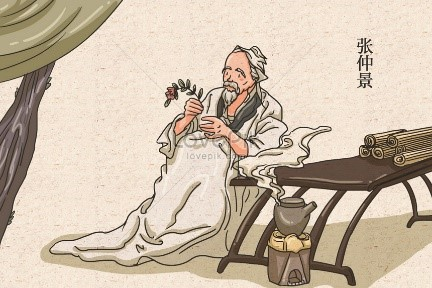

 Los antiguos conceptos de la medicina tradicional china hacen énfasis en un enfoque natural y preventivo. En el centro de la filosofía de la medicina tradicional china está el concepto de que la acción correctiva y preventiva puede ayudar si se toman las medidas adecuadas. Esto comienza por una observación detallada por parte de un practicante bien capacitado. Buscan alteraciones en alguno de los principios de la medicina tradicional china y ofrecen acciones a emprender. Estos practicantes afirman detectar problemas antes de lo que lo haría la medicina occidental. Sin embargo, si no se actúa en consecuencia a estas observaciones tempranas, las alteraciones en un aspecto de la medicina tradicional china llevarán a alteraciones en otros aspectos de los principios de la medicina tradicional china y se puede manifestar abiertamente la enfermedad. Esto viene de las ideas de conexión sobre las cuales leyó anteriormente.
La medicina tradicional china se ha ido abriendo paso en literalmente todas las sociedades alrededor del mundo, pero se le han dado diversos nombres. Algunos de los nombres más populares son: medicina complementaria y alternativa, medicina integrativa, medicina oriental, medicina funcional, medicina holística y medicina alternativa. Sin embargo, como sea que se le llame, los practicantes utilizan una variedad de protocolos para tratar lo que se cree que está en el origen de un problema de salud subyacente. Estos pueden incluir intervenciones en torno a la nutrición, alimentación, remedios herbales y diversas prácticas mente/cuerpo. Estos tratamientos pueden incluir acupuntura, terapia con ventosas, masaje terapéutico, scraping, reflexología, acomodamiento de huesos, técnicas quiroprácticas, respiración, ejercicio y entrenamientos de defensa personal. En la actualidad, la incorporación de técnicas modernas y convencionales, como el uso de productos farmacéuticos y la cirugía, también se pueden integrar en el enfoque de la medicina tradicional china y viceversa.